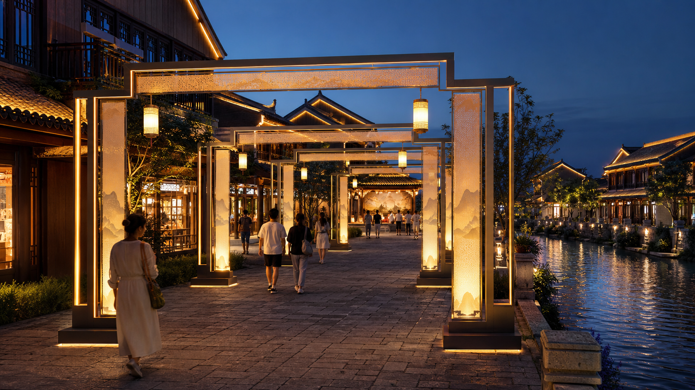

杭州亚运会
灯光产品或项目协作。
从入口地标、主拍照点到夜游动线，我们把灯光、结构、控制与维护一起设计，让一个夜间场景真正能够建成并持续运行。

我们设计的不只是灯。
夜游项目从客流、视线和停留开始。灯光装置只是其中一个节点；真正影响体验的，还有排队、拍照、供电、检修、节目切换和长期维护。
艺术装置建立记忆点，舞美装置承载演出，宫宴餐秀组织夜间消费，城市更新连接公共空间与长期运营。

宫宴餐秀不是一张舞台效果图。它需要同时解决文化主题、席位视线、上菜节奏、演员出入口、灯光节目、拍照传播和开业后的内容更新。
经公司负责人确认，相关经验包括杭州亚运会、北京冬奥会和第十五届全国运动会广州赛区。具体交付范围以项目资料为准，不代表官方授权或独家供应商身份。
灯光产品或项目协作。
灯光产品或项目协作。
灯光产品或项目协作。

先确认入口、主视线、排队空间、消防净空和可利用的供电点，再判断需要一个地标，还是一条连续动线。
从地方文化、建筑尺度和运营节奏提炼视觉母题，不用一套通用灯海覆盖所有项目。
结构、防水、控制回路、检修口、运输吊装和节目切换在设计阶段同步确定，减少现场返工。
不同场地需要不同的交付边界。以下为方案方向参考，不代表已完成项目或固定报价。

先核查水深、岸电、锚泊、强风和观演方向，再确定水上装置、岸线补光与节目控制。

兼顾远距离识别、近距离拍照、步行净空和节庆换装，减少只在效果图里成立的造型。

围绕车行视线、门厅尺度、雨棚高度和品牌色温，建立夜间识别和迎宾氛围。
正式方案根据现场条件确认材料、结构、供电、控制、防护、安装和质保边界，不用未经复核的参数代替工程判断。
核对尺寸、重量、风荷载、地面条件、运输分段和吊装路径。
分开常态、节庆和检修模式，提前规划回路、控制位置与应急切换。
根据室内外环境确认防护等级、排水、散热、检修口和备件边界。